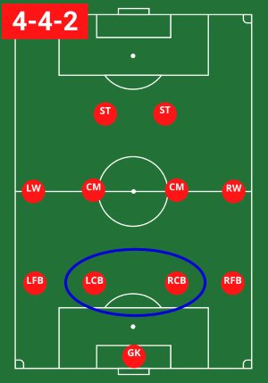
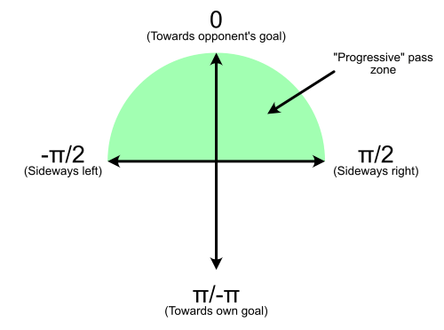

Sample Project: Analyzing Soccer (Football) Progressive Passing Data#
Author: Liam Foulger, MSc
Last Updated: October 15, 2024
Intro#
Welcome to my portfolio/sample project. The idea behind this is to provide a short sample of my skills as a data analyst while pursuing something interesting to me. Hope you enjoy!
Background#
As a lifelong soccer fan, former varsity soccer player, and long-time season ticket holder for my local team (Vancouver Whitecaps FC), I decided to look at some soccer data. Specifically, I am interested in how player characteristics influence how a team is able to progress the ball up the field (i.e., closer to the opponent’s goal), where they can attempt to score. Excluding the goalkeeper, teams generally progress the ball upfield starting from the center backs (Image 1). I am interested in determining if the foot (left or right) that is used to make a pass has an influence on how “progressive” the pass is.

Image 1. Example soccer formation, with the two center back positions (LCB: Left Center Back, RCB: Right Center Back) circled. Note that some formations have three center backs (Left Center Back, Center Back, and Right Center Back).
Optional Reading: Warning! Contains discussion of soccer-specific techniques#
As a left-sided center back for most of my youth/varsity playing days, I have always been of the opinion that having a left footed player at left center back poses a significant advantage when playing the ball out from the back. I think this is even more important when playing with three central defenders since this results in the two wide center backs receiving the ball in even wider positions. Having watched my Vancouver Whitecaps play with a three-at-the-back formation for the past few years has really solidified this belief. For example, when a right footed right center back receives the ball from the goalkeeper or center back, they prefer to receive it with their right foot. This allows them to open up their body to look forwards to make a pass while still being able to turn back towards their goal if under pressure. Alternatively, a right footed left center back will still generally prefer to receive the ball with (the inside of) their right foot, meaning that they receive the ball facing the inside of the field. This results in them facing away from the very wide left channel of the field, effectively cutting off their ability to quickly pass to that area of the pitch. Additionally, when right footed left center backs are pressured from the middle of the field (i.e., where the strikers generally press from), it is more difficult to pass with their right foot and will often (i.e., should) shift the ball to their weaker left foot. However, I acknowledge that these are just my personal opinions, which is why I wanted to look at some actual data.
Note: I also believe these same advantages apply to wingbacks in a 3-5-2 formation (which the Whitecaps play), when it comes to building the play in the defensive and middle 1/3rds of the field. Alas, this is not the focus of this analysis so I will not discuss this further.
Methodology#
Finding detailed match data was probably one of the more difficult aspects of this project. While there are lots of great websites with summary match statistics (e.g., goals scored, shots taken, fouls), I was interested in pass-specific data, so I needed detailed information about every pass that occured in a game. Luckily, Statsbomb has some freely available data I was able to use (statsbomb/open-data). The inspiration for this project came from watching my local team (Vancouver Whitecaps FC), who play in Major League Soccer (MLS). Unfortunately, the MLS data was quite limited, so I instead chose to use the most complete men’s league data I could find. This turned out to be the 2015/2016 English Premier League, which had data from every game that season (amazing!). While this is a different league than I was initially interested in looking at and a bit out of date, it is one of the best leagues in the world and I believe these results will translate to other leagues.
I chose to use Python for this project for the following reasons:
The data is in .json files, which Python has an easy-to-use package for reading directly from URLs.
The data contains nested information in the tables, which pandas is able to easily flatten to create easy-to-use dataframes.
Python has some great visualization packages (seaborn and matplotlib) and I can use jupyter notebook to share it nicely.
Python also has some stats packages in case I decide to do some stats.
Okay great, let's start looking at some data!
Extract, transform, and load the data#
First, let’s get the data. The data is located at the following GitHub: statsbomb/open-data. The data is rather large (11.7 GB) and I am only interested in a small portion of the data, so I will directly load it into Jupyter rather than download the data.
There are a couple layers to the data, so let’s walk through how I got the data I am interested in:
First, we need to find the competetion ID and season ID(s; some competetions have multiple seasons of data). A single .json file has this information, called “competitions.json”. Let’s load this data directly from the github repo, save the .json info, and then convert to a Pandas dataframe.
import requests
import json
import pandas as pd
import math
# This is the URL for the "competitions.json" file
comp_url = "https://raw.githubusercontent.com/statsbomb/open-data/refs/heads/master/data/competitions.json"
# Fetch the content
response = requests.get(comp_url)
# Load JSON content and save as pandas dataframe
comp_data = pd.json_normalize(json.loads(response.text))
# view first 5 rows of the dataframe
comp_data.head()
| competition_id | season_id | country_name | competition_name | competition_gender | competition_youth | competition_international | season_name | match_updated | match_updated_360 | match_available_360 | match_available | |
|---|---|---|---|---|---|---|---|---|---|---|---|---|
| 0 | 9 | 281 | Germany | 1. Bundesliga | male | False | False | 2023/2024 | 2024-07-15T14:15:54.671676 | 2024-07-15T14:17:00.877356 | 2024-07-15T14:17:00.877356 | 2024-07-15T14:15:54.671676 |
| 1 | 9 | 27 | Germany | 1. Bundesliga | male | False | False | 2015/2016 | 2024-05-19T11:11:14.192381 | None | None | 2024-05-19T11:11:14.192381 |
| 2 | 1267 | 107 | Africa | African Cup of Nations | male | False | True | 2023 | 2024-06-13T07:51:02.452825 | None | None | 2024-06-13T07:51:02.452825 |
| 3 | 16 | 4 | Europe | Champions League | male | False | False | 2018/2019 | 2024-06-12T07:44:38.559714 | 2021-06-13T16:17:31.694 | None | 2024-06-12T07:44:38.559714 |
| 4 | 16 | 1 | Europe | Champions League | male | False | False | 2017/2018 | 2024-02-13T02:35:28.134882 | 2021-06-13T16:17:31.694 | None | 2024-02-13T02:35:28.134882 |
Above you can see the first few rows of data in the newly created “comp_data” dataframe, which contains information about all of the competitions (i.e., leagues) in the dataset. The 2015/2016 Premier League season has the most complete dataset, so we are going to use that. Let’s take a look at that row in the dataframe and then save the competition ID and season ID.
# find the competition(s) that correspond with the name and season desired
competitions = comp_data[(comp_data["competition_name"] == "Premier League")
& (comp_data["season_name"] == "2015/2016")]
# save the competition ID and season ID
comp_id = competitions["competition_id"].values
season_id = competitions["season_id"].values
competitions
| competition_id | season_id | country_name | competition_name | competition_gender | competition_youth | competition_international | season_name | match_updated | match_updated_360 | match_available_360 | match_available | |
|---|---|---|---|---|---|---|---|---|---|---|---|---|
| 64 | 2 | 27 | England | Premier League | male | False | False | 2015/2016 | 2024-06-12T07:43:56.243851 | 2021-06-13T16:17:31.694 | None | 2024-06-12T07:43:56.243851 |
Great! Now that we have the competition and season IDs, we can load the match (game) information. The match data is located in the following subpath in the github: “…/data/matches/[competition_id]/[season_id].json”. So using the information above, let’s load the match table for the 2015/2016 Premier League season. (Note: while I could have just statically referenced this info, I chose to allow for dynamic referencing in case I want to look at a different year or competition in the future).
# define url for matches json file
matches_url = "https://raw.githubusercontent.com/statsbomb/open-data/refs/heads/master/data/matches/" + str(comp_id[0]) + "/" + str(season_id[0]) + ".json"
# Fetch the content
response = requests.get(matches_url)
# Load JSON content and save as pandas dataframe
matches_data = pd.json_normalize(json.loads(response.text))
# show first and last few rows of the data frame
matches_data
| match_id | match_date | kick_off | home_score | away_score | match_status | match_status_360 | last_updated | last_updated_360 | match_week | ... | competition_stage.id | competition_stage.name | stadium.id | stadium.name | stadium.country.id | stadium.country.name | referee.id | referee.name | referee.country.id | referee.country.name | |
|---|---|---|---|---|---|---|---|---|---|---|---|---|---|---|---|---|---|---|---|---|---|
| 0 | 3754058 | 2016-01-02 | 16:00:00.000 | 0 | 0 | available | processing | 2021-10-29T23:44:19.940296 | 2021-06-12T16:17:31.694 | 20 | ... | 1 | Regular Season | 20 | King Power Stadium | 68 | England | 5 | Andre Marriner | 68 | England |
| 1 | 3754245 | 2015-10-17 | 16:00:00.000 | 1 | 0 | available | scheduled | 2022-12-01T13:09:17.044015 | 2021-06-13T16:17:31.694 | 9 | ... | 1 | Regular Season | 33 | The Hawthorns | 68 | England | 4 | Martin Atkinson | 68 | England |
| 2 | 3754136 | 2015-12-19 | 18:30:00.000 | 1 | 1 | available | scheduled | 2020-11-12T23:48:19.757269 | 2021-06-13T16:17:31.694 | 17 | ... | 1 | Regular Season | 4674 | St. James'' Park | 68 | England | 4 | Martin Atkinson | 68 | England |
| 3 | 3754037 | 2016-04-30 | 16:00:00.000 | 2 | 1 | available | processing | 2021-07-07T17:59:57.456 | 2021-06-12T16:17:31.694 | 36 | ... | 1 | Regular Season | 12 | Goodison Park | 68 | England | 7 | Neil Swarbrick | 68 | England |
| 4 | 3754039 | 2016-02-13 | 16:00:00.000 | 1 | 2 | available | processing | 2021-07-25T18:09:51.386 | 2021-06-12T16:17:31.694 | 26 | ... | 1 | Regular Season | 37 | Selhurst Park | 68 | England | 9 | Robert Madley | 68 | England |
| ... | ... | ... | ... | ... | ... | ... | ... | ... | ... | ... | ... | ... | ... | ... | ... | ... | ... | ... | ... | ... | ... |
| 375 | 3754020 | 2015-08-17 | 21:00:00.000 | 1 | 0 | available | scheduled | 2022-07-08T21:26:42.829047 | 2021-06-13T16:17:31.694 | 2 | ... | 1 | Regular Season | 6 | Anfield | 68 | England | 2 | Craig Pawson | 68 | England |
| 376 | 3754267 | 2015-08-15 | 16:00:00.000 | 0 | 0 | available | scheduled | 2020-07-29T05:00 | 2021-06-13T16:17:31.694 | 2 | ... | 1 | Regular Season | 4589 | Vicarage Road | 68 | England | 17 | Paul Tierney | 68 | England |
| 377 | 3754141 | 2015-08-09 | 14:30:00.000 | 0 | 2 | available | scheduled | 2020-08-24T23:30:31.273938 | 2021-06-13T16:17:31.694 | 1 | ... | 1 | Regular Season | 3 | Emirates Stadium | 68 | England | 4 | Martin Atkinson | 68 | England |
| 378 | 3754128 | 2015-08-08 | 16:00:00.000 | 0 | 1 | available | scheduled | 2022-07-08T20:29:32.062770 | 2021-06-13T16:17:31.694 | 1 | ... | 1 | Regular Season | 71 | Vitality Stadium | 68 | England | 728 | Mark Clattenburg | 68 | England |
| 379 | 3754078 | 2015-08-08 | 18:30:00.000 | 2 | 2 | available | scheduled | 2022-07-08T20:50:15.565471 | 2021-06-13T16:17:31.694 | 1 | ... | 1 | Regular Season | 10 | Stamford Bridge | 68 | England | 1 | Michael Oliver | 68 | England |
380 rows × 42 columns
Now we have a list of details regarding every match that took place in the 2015/2016 season. This contains general information such as the score, the teams involved, where it took place, and much more. However, we are looking for detailed data about every pass that occurred during the games. To find this, we must load the “event” data. Each event .json file contains information about every shot, pass, tackle, and more that occurred during a single game. The events are named based on the match IDs, which is why we first need to create a list of all match IDs. Let’s now load a single event data to take a look at what is in it.
# save the match IDs in a list
match_ids = matches_data["match_id"].values
# select the first match ID
curr_id = match_ids[0]
# load the current ID
event_url = "https://raw.githubusercontent.com/statsbomb/open-data/refs/heads/master/data/events/" + str(curr_id) + ".json"
# Fetch the content
response = requests.get(event_url)
# Load JSON content and save as pandas dataframe
event_json = json.loads(response.text)
event_data = pd.json_normalize(event_json,)
# show first and last few events
event_data
| id | index | period | timestamp | minute | second | possession | duration | type.id | type.name | ... | goalkeeper.technique.id | goalkeeper.technique.name | goalkeeper.body_part.id | goalkeeper.body_part.name | pass.inswinging | foul_committed.penalty | foul_won.penalty | pass.outswinging | miscontrol.aerial_won | goalkeeper.punched_out | |
|---|---|---|---|---|---|---|---|---|---|---|---|---|---|---|---|---|---|---|---|---|---|
| 0 | 9153e9f4-f69c-4e04-8f64-505592e212cd | 1 | 1 | 00:00:00.000 | 0 | 0 | 1 | 0.000000 | 35 | Starting XI | ... | NaN | NaN | NaN | NaN | NaN | NaN | NaN | NaN | NaN | NaN |
| 1 | 3fbcf4e7-94d1-485a-be85-fd26a6af0318 | 2 | 1 | 00:00:00.000 | 0 | 0 | 1 | 0.000000 | 35 | Starting XI | ... | NaN | NaN | NaN | NaN | NaN | NaN | NaN | NaN | NaN | NaN |
| 2 | 06a9a4dc-d9c9-40f6-bd89-437ba7fe682d | 3 | 1 | 00:00:00.000 | 0 | 0 | 1 | 0.000000 | 18 | Half Start | ... | NaN | NaN | NaN | NaN | NaN | NaN | NaN | NaN | NaN | NaN |
| 3 | 100362ee-9311-4187-bd8a-0201d9db2565 | 4 | 1 | 00:00:00.000 | 0 | 0 | 1 | 0.000000 | 18 | Half Start | ... | NaN | NaN | NaN | NaN | NaN | NaN | NaN | NaN | NaN | NaN |
| 4 | 2ca23eea-a984-47e4-8243-8f00880ad1c9 | 5 | 1 | 00:00:01.753 | 0 | 1 | 2 | 0.308263 | 30 | Pass | ... | NaN | NaN | NaN | NaN | NaN | NaN | NaN | NaN | NaN | NaN |
| ... | ... | ... | ... | ... | ... | ... | ... | ... | ... | ... | ... | ... | ... | ... | ... | ... | ... | ... | ... | ... | ... |
| 3571 | 20baabc3-44a5-4792-8336-60dc513cc0bd | 3572 | 2 | 00:49:29.281 | 94 | 29 | 192 | 4.656505 | 43 | Carry | ... | NaN | NaN | NaN | NaN | NaN | NaN | NaN | NaN | NaN | NaN |
| 3572 | 3196324d-cf4d-4d9c-92b7-5b1cac9a5910 | 3573 | 2 | 00:49:33.938 | 94 | 33 | 192 | 0.909625 | 30 | Pass | ... | NaN | NaN | NaN | NaN | NaN | NaN | NaN | NaN | NaN | NaN |
| 3573 | 3052795e-42ae-4543-b039-c52157c92ce6 | 3574 | 2 | 00:49:34.847 | 94 | 34 | 192 | NaN | 42 | Ball Receipt* | ... | NaN | NaN | NaN | NaN | NaN | NaN | NaN | NaN | NaN | NaN |
| 3574 | 3371e127-bdb0-45d1-84c4-eb86c918af6b | 3575 | 2 | 00:49:38.689 | 94 | 38 | 192 | 0.000000 | 34 | Half End | ... | NaN | NaN | NaN | NaN | NaN | NaN | NaN | NaN | NaN | NaN |
| 3575 | 385145e8-fec7-401e-8ad0-55e3e3d1f8ff | 3576 | 2 | 00:49:38.689 | 94 | 38 | 192 | 0.000000 | 34 | Half End | ... | NaN | NaN | NaN | NaN | NaN | NaN | NaN | NaN | NaN | NaN |
3576 rows × 115 columns
As you can see, there are a lot of rows (events) in a single file. There are also lots of columns not shown in this preview, so let’s take a look at all of the columns:
event_data.columns.values.tolist()
['id',
'index',
'period',
'timestamp',
'minute',
'second',
'possession',
'duration',
'type.id',
'type.name',
'possession_team.id',
'possession_team.name',
'play_pattern.id',
'play_pattern.name',
'team.id',
'team.name',
'tactics.formation',
'tactics.lineup',
'related_events',
'location',
'player.id',
'player.name',
'position.id',
'position.name',
'pass.recipient.id',
'pass.recipient.name',
'pass.length',
'pass.angle',
'pass.height.id',
'pass.height.name',
'pass.end_location',
'pass.type.id',
'pass.type.name',
'pass.body_part.id',
'pass.body_part.name',
'carry.end_location',
'under_pressure',
'pass.switch',
'pass.outcome.id',
'pass.outcome.name',
'duel.outcome.id',
'duel.outcome.name',
'duel.type.id',
'duel.type.name',
'ball_receipt.outcome.id',
'ball_receipt.outcome.name',
'pass.aerial_won',
'counterpress',
'pass.assisted_shot_id',
'pass.shot_assist',
'shot.statsbomb_xg',
'shot.end_location',
'shot.key_pass_id',
'shot.technique.id',
'shot.technique.name',
'shot.body_part.id',
'shot.body_part.name',
'shot.outcome.id',
'shot.outcome.name',
'shot.type.id',
'shot.type.name',
'shot.freeze_frame',
'goalkeeper.end_location',
'goalkeeper.type.id',
'goalkeeper.type.name',
'goalkeeper.position.id',
'goalkeeper.position.name',
'clearance.body_part.id',
'clearance.body_part.name',
'clearance.right_foot',
'off_camera',
'out',
'pass.cross',
'pass.cut_back',
'dribble.outcome.id',
'dribble.outcome.name',
'dribble.overrun',
'dribble.nutmeg',
'clearance.left_foot',
'interception.outcome.id',
'interception.outcome.name',
'foul_committed.advantage',
'foul_won.advantage',
'ball_recovery.recovery_failure',
'foul_won.defensive',
'shot.first_time',
'pass.technique.id',
'pass.technique.name',
'pass.through_ball',
'clearance.head',
'clearance.aerial_won',
'foul_committed.offensive',
'pass.deflected',
'goalkeeper.outcome.id',
'goalkeeper.outcome.name',
'shot.one_on_one',
'foul_committed.card.id',
'foul_committed.card.name',
'shot.aerial_won',
'foul_committed.type.id',
'foul_committed.type.name',
'substitution.outcome.id',
'substitution.outcome.name',
'substitution.replacement.id',
'substitution.replacement.name',
'goalkeeper.technique.id',
'goalkeeper.technique.name',
'goalkeeper.body_part.id',
'goalkeeper.body_part.name',
'pass.inswinging',
'foul_committed.penalty',
'foul_won.penalty',
'pass.outswinging',
'miscontrol.aerial_won',
'goalkeeper.punched_out']
Now that we’ve taken a look at the event data, let’s make a function to extract the necessary data for my analysis. Since I am interested in passing data, let’s get (complete) pass events from the right and left center backs. Since we are interested in whether passes are progressive or not, we need to do some transforming of the data provided. Specifically, all passing data is provided with the angle of the pass (from -pi to pi; see Image 2 for reference), so we can use that to determine whether a pass is progressive or not.

Image 2. Illustration of the pass angle information provided in the events datafile. For the purpose of this analysis, I have chosen to define a progressive pass as anything that moves the pass forward (green shaded area), even if it is just above sideways.
I am also interested in looking at “how progressive” a pass is (i.e., how much distance does the pass move the ball towards to opponent’s goal). To calculate this, we can use the pass angle and pass length in yards (1 yard = ~0.91 meters) to determine how much forward distance the pass gained. For non-progressive passes (as previously defined), we will set this value to 0.
def getPassData(match_id):
"""
Function to get the completed passes from the event data, filtered by:
1) Make sure it was a "pass" event
2) Make sure it was a completed pass (outcome == null)
3) Make sure the body part was the left or right foot (i.e., ignoring headers or other body parts used to make a pass)
4) Make sure it was from the left or right center backs
and then only select the relevant columns
Also, add new columns to 1) determine whether the pass progressed the ball forward and
2) how far the ball was progressed forward (in yards)
"""
#construct the event file url
event_url = "https://raw.githubusercontent.com/statsbomb/open-data/refs/heads/master/data/events/" + str(curr_id) + ".json"
# Fetch the content
response = requests.get(event_url)
# Load JSON content and save as pandas dataframe
event_data = pd.json_normalize(json.loads(response.text))
# filter out only the based on the following:
# 1) Make sure it was a "pass" event
# 2) Make sure it was a completed pass (outcome == null)
# 3) Make sure the body part was the left or right foot (i.e., ignoring headers or other body parts used to make a pass)
# 4) Make sure it was from the left or right center backs
# and then only select the relevant columns
pass_data = event_data[(event_data["type.name"] == "Pass")
& (event_data["pass.outcome.id"].isnull())
& ((event_data["pass.body_part.name"] == "Right Foot") |
(event_data["pass.body_part.name"] == "Left Foot"))
& ((event_data["position.name"] == "Right Center Back") |
(event_data["position.name"] == "Left Center Back"))][["position.name","pass.length","pass.angle",
"pass.body_part.name"]]
# add a new column to determine if the pass was forward (i.e., towards the opponent's goal)
pass_data["is_progressive"] = pass_data["pass.angle"].apply(lambda x: True if ((x < math.pi/2) & (x > -math.pi/2)) else False)
# add a new column to determine how much forward space was gained from the pass
pass_data["distance_progressed"] = pass_data.apply(lambda row: row['pass.length']*math.cos(row['pass.angle']) if ((row['pass.angle'] < math.pi/2) & (row['pass.angle'] > -math.pi/2)) else 0, axis=1)
return pass_data
# test out function and show some rows of the data frame
getPassData(curr_id)
| position.name | pass.length | pass.angle | pass.body_part.name | is_progressive | distance_progressed | |
|---|---|---|---|---|---|---|
| 15 | Right Center Back | 15.890248 | 1.064920 | Right Foot | True | 7.700000 |
| 22 | Right Center Back | 40.412373 | -1.546049 | Right Foot | True | 1.000000 |
| 25 | Left Center Back | 26.122213 | -0.940311 | Right Foot | True | 15.400001 |
| 32 | Left Center Back | 24.782251 | 1.692148 | Right Foot | False | 0.000000 |
| 35 | Right Center Back | 16.531485 | -0.404097 | Right Foot | True | 15.200000 |
| ... | ... | ... | ... | ... | ... | ... |
| 3421 | Left Center Back | 19.250975 | -2.570880 | Right Foot | False | 0.000000 |
| 3438 | Left Center Back | 13.237824 | 0.470404 | Right Foot | True | 11.799999 |
| 3529 | Left Center Back | 14.505516 | -1.543217 | Right Foot | True | 0.400000 |
| 3554 | Right Center Back | 21.868927 | 1.111239 | Right Foot | True | 9.699999 |
| 3572 | Right Center Back | 7.280110 | -0.278300 | Right Foot | True | 7.000000 |
134 rows × 6 columns
Great, so we can see that I’ve gotten all the (completed) passes, from the right and left center backs, with all the relevant data including the two columns I’ve added at the end (“is_progressive” = whether the pass moves the ball forward; “distance_progressed” = how far forward the ball is moved). Now we can loop through all of the matches to get a big dataframe with all of the specified passes from the entire season.
# create empty list to add data frames to
df_list = []
# for each match, get the passing data frame (from the function) and add it to the list of passing dataframes
# there are a lot of matches to load, so this takes some time.
# Some thoughts on how I could speed this up:
# - Parallel loops
# - reading from the url may make this take longer, so having the data downloaded could speed this up
# - numeric arrays might be faster to work with, rather than pandas dataframes, so I could have kept them in arrays until
# the very end when I could convert the single matrix into a dataframe
for current_id in match_ids:
df_list.append(getPassData(current_id))
# now combine all of the dataframes together at once, this is very quick
passing_data = pd.concat(df_list, ignore_index=True)
passing_data
| position.name | pass.length | pass.angle | pass.body_part.name | is_progressive | distance_progressed | |
|---|---|---|---|---|---|---|
| 0 | Right Center Back | 15.890248 | 1.064920 | Right Foot | True | 7.700000 |
| 1 | Right Center Back | 40.412373 | -1.546049 | Right Foot | True | 1.000000 |
| 2 | Left Center Back | 26.122213 | -0.940311 | Right Foot | True | 15.400001 |
| 3 | Left Center Back | 24.782251 | 1.692148 | Right Foot | False | 0.000000 |
| 4 | Right Center Back | 16.531485 | -0.404097 | Right Foot | True | 15.200000 |
| ... | ... | ... | ... | ... | ... | ... |
| 50915 | Left Center Back | 19.250975 | -2.570880 | Right Foot | False | 0.000000 |
| 50916 | Left Center Back | 13.237824 | 0.470404 | Right Foot | True | 11.799999 |
| 50917 | Left Center Back | 14.505516 | -1.543217 | Right Foot | True | 0.400000 |
| 50918 | Right Center Back | 21.868927 | 1.111239 | Right Foot | True | 9.699999 |
| 50919 | Right Center Back | 7.280110 | -0.278300 | Right Foot | True | 7.000000 |
50920 rows × 6 columns
Analysis#
Great, now that we have all of the data in an easy-to-use dataframe, let’s dig into it. I’ll use seaborn and matplotlib to do some plotting.
import seaborn as sns
import matplotlib.pyplot as plt
First, let’s take a look at the breakdown of right vs left footed passes, and to provide some more context, let’s break it down by side (i.e., right center back vs left center back).
sns.set(style="white")
plt.figure(figsize=(7, 5))
# Use seaborn's countplot to visualize counts of 'subcategory' within each 'category'
ax = sns.countplot(data=passing_data, x='position.name', hue='pass.body_part.name',
order=['Left Center Back','Right Center Back'],hue_order=['Left Foot','Right Foot'])
plt.ylim(0,25000)
sns.despine(offset=10, trim=True,bottom=True)
plt.xlabel("Player Position")
plt.ylabel("Number of Complete Passes")
plt.title("Passing Breakdown")
legend = ax.legend(title=None, frameon=False)
for p in ax.patches: # adding the numbers to the plots
ax.annotate(f'{int(p.get_height())}', # Label text
(p.get_x() + p.get_width() / 2., p.get_height()), # Coordinates
ha='center', va='baseline', xytext=(0, 5), # Text offset
textcoords='offset points')
# Show plot
plt.show()
Unsuprisingly, most passes were completed with the right foot since most players (and people in general) are right footed. Although the number of left footed passes increases in the left center back (and the number of right footed passes decreases). Now, let’s take a look at the proportion of passes that were deemed progressive.
# first, group the data based on position, to determine the proportion of progressive passes
grouped_pos = passing_data.groupby(['position.name', 'is_progressive']).size().reset_index(name='count')
grouped_pos['proportion'] = grouped_pos.groupby(['position.name'])['count'].apply(lambda x: round(x / x.sum()*100,2)).reset_index(drop=True)
# next, we can group the data based on position and foot used to make the pass
grouped_pos_foot = passing_data.groupby(['position.name', 'pass.body_part.name', 'is_progressive']).size().reset_index(name='count')
grouped_pos_foot['proportion'] = grouped_pos_foot.groupby(['position.name', 'pass.body_part.name'])['count'].apply(lambda x: round(x / x.sum()*100,2)).reset_index(drop=True)
# there's only a few numbers in these tables, so I could just show the tables and be done with it, but I think figures
# will look a bit nicer, so let's make them here
sns.set(style="white")
fig, axs = plt.subplots(1, 2, figsize=(14, 6)) # create subplot with 1 row, 2 columns
# First plot: % of progressive passes for right center back vs left center back
sns.barplot(data=grouped_pos[grouped_pos['is_progressive']], x='position.name', y='proportion',
ax=axs[0],color='mediumpurple')
axs[0].set_title('Progressive Passing By Position')
axs[0].set_ylabel('% progressive passes')
axs[0].set_xlabel('Position')
axs[0].set_ylim(0, 100)
sns.despine(ax=axs[0],offset=10, trim=True,bottom=True)
for p in axs[0].patches: # adding the numbers to the plots
axs[0].annotate(f'{float(p.get_height())}%', # Label text
(p.get_x() + p.get_width() / 2., p.get_height()), # Coordinates
ha='center', va='baseline', xytext=(0, 5), # Text offset
textcoords='offset points')
# Second plot: % of progressive passes for right center back vs left center back, broken down by foot
sns.barplot(data=grouped_pos_foot[grouped_pos_foot['is_progressive']], x='position.name', y='proportion',
hue='pass.body_part.name',hue_order=['Left Foot','Right Foot'], ax=axs[1])
axs[1].set_title('Progressive Passing By Position & Foot')
axs[1].set_ylabel('% progressive passes')
axs[1].set_xlabel('Position')
axs[1].set_ylim(0, 100)
sns.despine(ax=axs[1],offset=10, trim=True,bottom=True)
for p in axs[1].patches: # adding the numbers to the plots
axs[1].annotate(f'{float(p.get_height())}%', # Label text
(p.get_x() + p.get_width() / 2., p.get_height()), # Coordinates
ha='center', va='baseline', xytext=(0, 5), # Text offset
textcoords='offset points')
legend = axs[1].legend(title=None, frameon=False)
# Add some layout adjustments
plt.tight_layout()
# Show the plot
plt.show()
Okay - let’s try to break this down.
The left-hand plot tells us that the proportion of progressive passes is larger for the right center back compared to the left center back.
Now, the right-hand plot breaks this down by position and foot. Firstly, we can see that for both the left and right center backs, the proportion of progressive passes is larger for the right foot. Again, this isn’t too suprising since 1) most players are right footed and 2) progressive passes are usually more difficult to complete, so players will prefer to make these passes with their preferred foot. However, we can see that for the right foot, the proportion of progressive passes slightly decreases from right center back to left center back. Alternatively, for the left foot, the opposite occurs.
Okay, so this is interesting, but I’m not sure how much this really tells us given that most players are right foot dominant and we’ve cast a pretty wide net for defining what is a progressive pass. Next, let’s look at how much distance was actually gained in these progressive passes.
sns.set(style="white")
plt.figure(figsize=(7, 5))
# Use seaborn's boxplot to look at average distance progressed, broken down by position and foot
ax = sns.boxplot(data=passing_data[passing_data['is_progressive']], x='position.name', y='distance_progressed',
hue='pass.body_part.name',hue_order=['Left Foot','Right Foot'],
order=['Left Center Back','Right Center Back'],
fliersize=5,flierprops={"marker": "o"})
plt.ylim(0,55)
sns.despine(offset=10, trim=True,bottom=True)
plt.xlabel("Player Position")
plt.ylabel("Distance Progressed (yards)")
plt.title("Progressive Passing Breakdown")
legend = ax.legend(title=None, frameon=False)
Okay, here we have a boxplot that breaks down the distance progressed for passes from the center backs, broken down by foot.
(Note about reading boxplots: the box indicates the range of data from the 25th to 75th percentile, with the line representing the median. The whiskers that extend from the boxes represent the range of the data, excluding outliers which are represented as dots).
Focusing on the left center back, here we can see a very large difference between the distance progressed using the left foot compared to the right foot. This is very interesting to me; while the previous figure showed that a higher proportion of the right footed passes by a left center back were progressive, here we can see that the left foot progressive passes resulted in much more distance progressed.
Since I was interested in specifically looked at the left vs right foot of the left center back, let’s also run a quick statistical test (setting p < 0.05) to compare the distances progressed. I’m chosing to do a single t-test (one-sided Welch) to keep things short and simple here, but a 2-way ANOVA with post-hoc comparisons (adjusted for multiple comparisons) would provide a nice summary of whether position and foot influence pass progression, and what differences there are.
from scipy.stats import ttest_ind
# group all of the right foot data from the left center back
lcb_rfoot = passing_data[(passing_data['position.name'] == 'Left Center Back') &
(passing_data['pass.body_part.name'] == 'Right Foot') &
passing_data['is_progressive']]['distance_progressed'].values
# group all of the left foot data from the left center back
lcb_lfoot = passing_data[(passing_data['position.name'] == 'Left Center Back') &
(passing_data['pass.body_part.name'] == 'Left Foot') &
passing_data['is_progressive']]['distance_progressed'].values
# run welch's t-test (since we have unequal variances), with the alternative hypothesis that the right footed passes
# would be less progressive than the left footed passes
ttest_ind(lcb_rfoot, lcb_lfoot, equal_var=False,alternative='less')
#here are the results:
TtestResult(statistic=-30.936900738410248, pvalue=1.6636662753119952e-188, df=3916.1949355938073)
And as we can see, the p-value is <<< 0.05, so we can reject the null hypothesis that there are no differences between the distances progressed of the right and left footed passes for the left center back.
Brief Summary#
In this short analysis, I have looked at the progressive passing of the left and right center backs, broken down by whether they used their right or left foot. Overall, there is a clear preference of players to use their right foot compared to their left, likely because most players are right foot dominant. This difference is smaller for the left center backs, however, likely because some left center backs are left foot dominant. This difference was also reflected in the proportion of passes that I deemed to be progressive, with a larger proportion of progressive passes with the right foot for both the left and right center backs. However, when I looked at the distance progressed, we see that left footed passes were much more progressive (in terms of distance) compared to right footed passes for the left center backs. This indicates that there is an advantage of left footed passes for left center backs, suggesting that left foot dominant players may provide an advantage in this position.
A note on some limitations & future directions#
I’ve mentioned some limitations throughout this notebook, but here is a (non-exhaustive) list of other limitations and future directions that I could take this project:
The biggest limitation is the lack of information about players’ preferred foot. While I’ve broken down the information by foot used, having the information about each player would allow for more in-depth analysis about whether a left footed player is able to make more progressive passes on the left side, compared to a right footed player. Future work could involve using other databases to find the players’ preferred foot, and then joining that information to our existing dataframes. Although this poses some likely difficulties, as some player names will not exactly match between databases.
I determined passing “progressiveness” based on whether the pass was even slightly forward. However, is a pass that gain 0.1 yards really progressive? Perhaps a stricter definition of progressive passing would change the results.
I chose to only look at completed passes, however, there is likely lots of valuable insights to be found in looking at pass completion rates (i.e., how accurate the passing was).
The purpose of this analyses was to look at how center backs progress the ball up the field (towards to opponent’s goal), but I chose not to filter out passes by location. This means that if a center back completed a pass while they were drastically out of position and in the opponent’s half (e.g., following a corner or on the other side of the field), this would be included in the data. However, most of the passes will have been completed in normal gameplay, so I don’t believe this will have had a major effect on the results.
The formation used by the team will also have an influence on the positioning of the players. Specifically, when playing with 3 center backs, I believe that the advantage of having a left footed left center back will be greater, but I did not filter out passes based on the team’s formation.
That’s all for this project, hope you enjoyed and found it interesting!